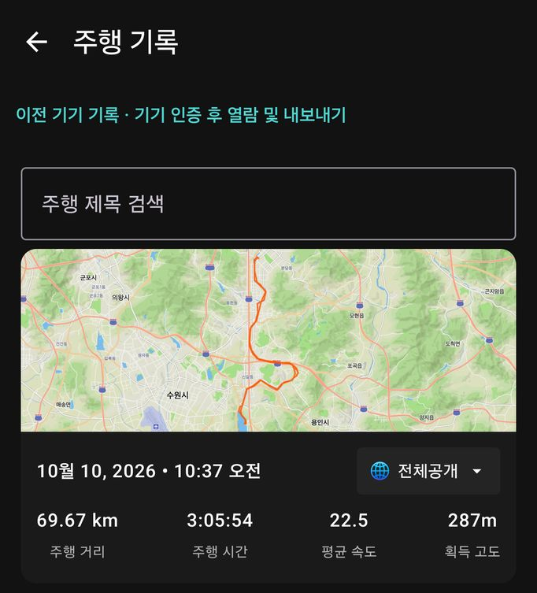
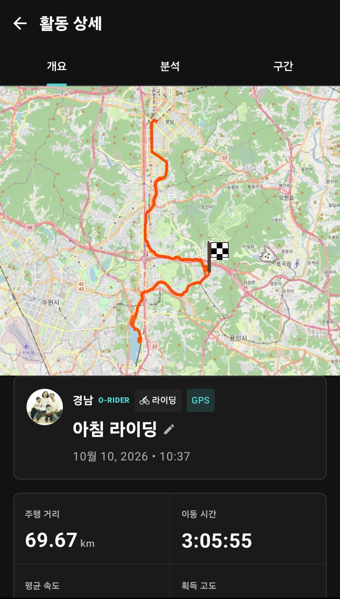
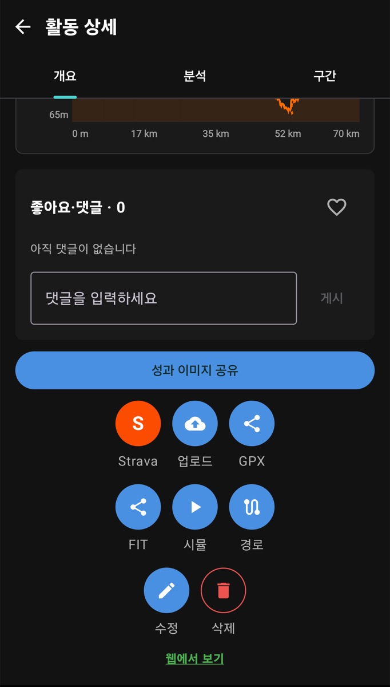
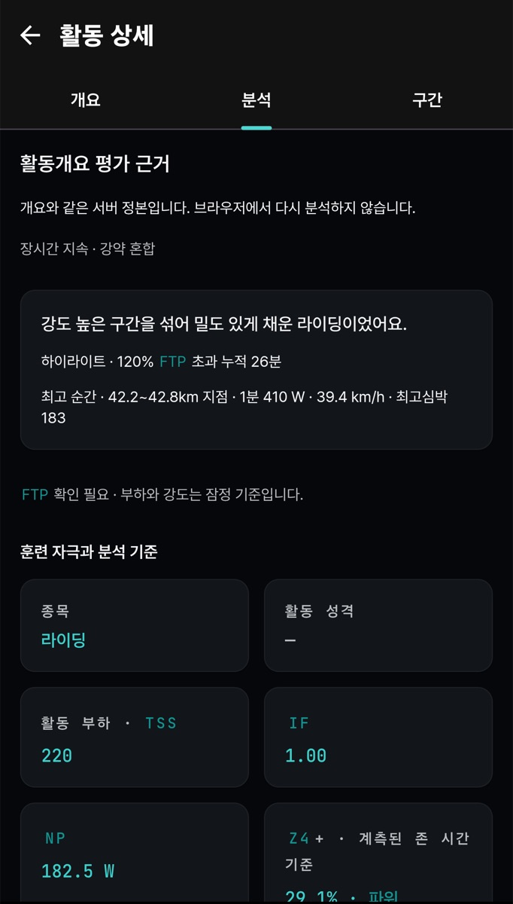

5. 기록 보기
이 장에서 할 수 있는 것
- 저장한 라이딩·러닝 기록을 찾아 엽니다.
- 활동 상세의 개요·분석·구간 탭을 읽고, 공개 범위를 확인합니다.
- 기록을 Strava에 올리거나 GPX·FIT 파일로 내보냅니다.
- 상태 화면에서 체력·피로(PMC)와 오늘의 워크아웃을 봅니다.
따라 하기: 기록 찾기
- 홈의 최근 활동에서 항목을 누르거나, 오른쪽 전체 보기를 누릅니다.
- 전체 목록은 주행 기록 화면입니다. 설정 > 기록/경로/상태 > 주행 기록으로도 엽니다.
- 위쪽 주행 제목 검색에 이름을 넣어 찾을 수 있습니다.
- 항목을 누르면 활동 상세가 열립니다.

주행 기록 — 카드마다 거리·시간·평균 속도·획득 고도와 함께 공개 범위(예: 🌐 전체공개 ▾)가 표시됩니다. 이 칸을 눌러 공개 범위를 바꿉니다.
맨 위 이전 기기 기록 · 기기 인증 후 열람 및 내보내기는 예전 휴대폰에서 남긴 기록을 기기 인증 후 보고 내보내는 메뉴입니다.
화면 읽는 법: 활동 상세 — 개요

활동 상세 > 개요 — 이름 옆 연필로 활동 이름을 바꿉니다. 이름 위 칩이 종목(라이딩)과 기록 출처(GPS)입니다.

개요 아래쪽 — 둥근 버튼 아래 이름이 Strava · 업로드 · GPX · FIT · 시뮬 · 경로 · 수정 · 삭제입니다. 맨 아래에 웹에서 보기가 있습니다.
개요 탭을 아래로 내리면 다음 순서로 나옵니다.
| 구역 | 내용 |
|---|
| 지도 · 제목 | 지나온 길, 활동 이름, 날짜 |
| 통계 | 주행 거리, 이동 시간, 평균·최고 속도, 획득 고도, 평균·최대 파워, 평균·최대 심박수, 평균 케이던스, 칼로리, NP, IF, TSS, 최저 W'bal, 페달 밸런스, 기어 등 (측정한 값만) |
| 공개 범위 | 이 활동을 누가 볼지(전체공개 / 친구만 / 비공개). 🌐 전체공개 ▾ 칸을 눌러 바꿉니다. 이름이 화면마다 달라도 같은 3단계입니다(7장 공개 범위 표). |
| 사진 | 사진 추가로 활동에 사진을 붙입니다. |
| AI 라이딩 분석 | “코스·강도·페이싱을 코치 시점으로” 분석합니다. AI 분석 받기를 눌러야 시작됩니다. |
| 고도 & 성능 분석 | 해발 고도 · 주행 속도 · 심박수 · 현재 파워 그래프를 바꿔 봅니다. |
| 좋아요·댓글 | 친구의 반응과 댓글 |
| 버튼 모음 | 성과 이미지 공유와 아래 표의 버튼들, 맨 아래 웹에서 보기 |
iOS iPhone의 버튼 이름은
Strava에 업로드 · 플랫폼에 업로드 · GPX 내보내기 · FIT 내보내기 · 기록 삭제이고, 웹으로 가는 버튼은
웹에서 열기입니다. 시뮬 · 경로 · 수정은 Android에만 있습니다(
0장 대응표).
| 버튼 이름 (Android) | 하는 일 | 보이는 조건 |
|---|
| Strava (S) | 이 활동을 Strava에 올립니다. 올라가면 체크 표시로 바뀝니다. | Strava 연결 시 |
| 업로드 (구름) | 이 활동을 오라이더 서버에 올립니다. 웹이나 피트니스 탭에 기록이 안 보일 때 누르세요. 끝나면 “업로드 완료”와 체크 구름으로 바뀝니다. | 로그인 시 |
| GPX · FIT | 활동을 파일로 내보냅니다. | 항상 |
| Android 시뮬 | 이 활동의 데이터로 기록 화면을 다시 재생해 봅니다. 시뮬 시작을 누르면 기록 화면으로 이동하고, 설정 > 시스템 > 고급 > 시뮬레이션 모드 사용이 켜져 있을 때 시작 버튼을 누르면 재생됩니다. 화면 배치를 시험할 때 씁니다. | 항상 |
| Android 경로 | 이 활동의 길을 경로로 불러와 같은 길로 다시 탑니다(이 경로로 라이딩). | 경로가 있는 활동 |
| Android 수정 | 웹에서 활동 정보를 고치는 화면을 엽니다. | 서버에 올라간 활동 |
| 삭제 | 활동을 지웁니다. | 항상 |
삭제는 되돌릴 수 없습니다. 공개 범위만 바꾸려면 삭제하지 말고 공개 범위를 바꾸세요.
화면 읽는 법: 분석 · 구간

분석 탭 — 맨 위 한 줄(예: “장시간 지속 · 강약 혼합”)이 이 활동의 성격입니다. 물음표 버튼을 누르면 FTP·TSS 같은 용어 설명이 나옵니다.
- 분석 — 활동 성격, 하이라이트(최고 순간), 훈련 자극과 분석 기준(활동 부하, IF, NP, 존 시간 등). 서버에서 계산한 값이라 웹과 같습니다. 처음 열 때 잠시 회색 칸이 보이다 채워집니다.
- 구간 — 지나간 세그먼트(구간)별 기록. 해당하는 구간이 없으면 “표시할 구간 데이터가 없습니다.”가 나옵니다.
따라 하기: 내보내기와 공유
- 활동 상세 개요를 맨 아래까지 내립니다.
- GPX(경로 위주) 또는 FIT(센서 값 포함)를 누르고, 공유 창에서 저장할 앱을 고릅니다.
- Strava에 수동으로 올리려면 Strava 버튼을 누릅니다. 자동 업로드는 9장.
- 사진처럼 공유하려면 성과 이미지 공유를 누릅니다.
상태 화면 (PMC · 오늘의 워크아웃)
설정 > 기록/경로/상태 > 상태에서 오늘의 워크아웃, 주차별 계획, 목표까지 남은 날(D-day), 피트니스 그래프를 한 화면에 봅니다.
| 숫자 | 뜻 | 읽는 법 |
|---|
| Fitness (CTL) | 최근 몇 주 동안 쌓인 훈련량 | 천천히 오르내립니다. 꾸준히 오르면 체력이 붙는 중입니다. |
| Fatigue (ATL) | 최근 며칠의 피로 | 강한 운동 직후 크게 오릅니다. |
| Form (TSB) | Fitness − Fatigue | 음수면 피로가 체력보다 큰 상태, 양수면 회복된 상태입니다. |
화면 그림과 아래 AI 코치 구역은 8장에 있습니다.
자주 막히는 점
파워미터·심박계 없이 기록했다면 파워·심박 칸은 비어 있는 것이 정상입니다. 가상파워는 실제 측정값이 아니라 추정값입니다.
방금 끝낸 기록의 분석이나 피트니스 값이 바로 안 보이면 서버 계산이 끝나지 않은 것입니다. 인터넷에 연결된 상태로 잠시 뒤 다시 여세요.
큰 화면에서 기록을 비교하려면
웹에서 보기를 누르거나
웹 설명서를 참고하세요.